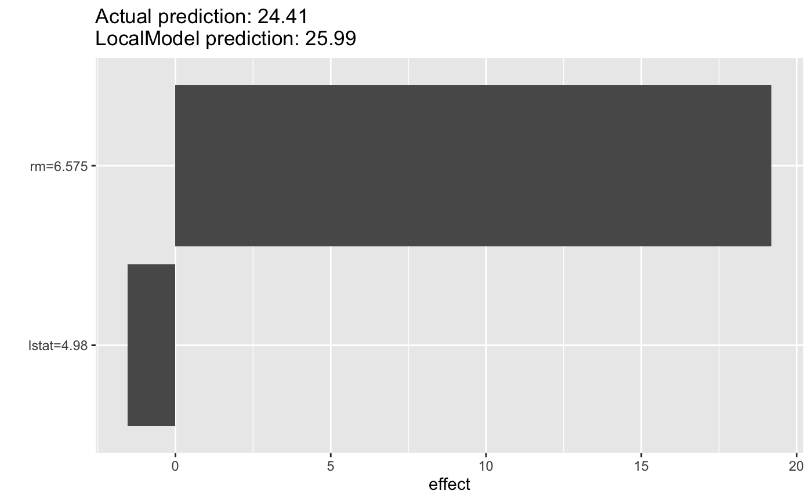
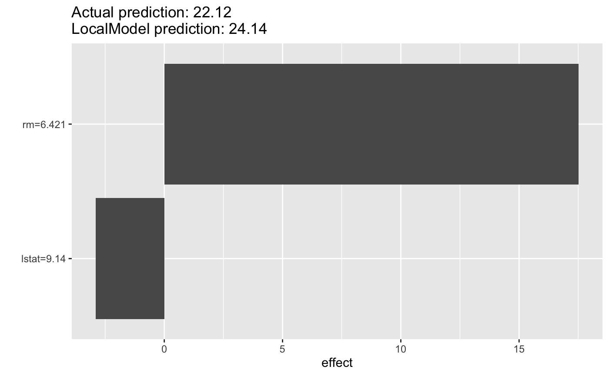
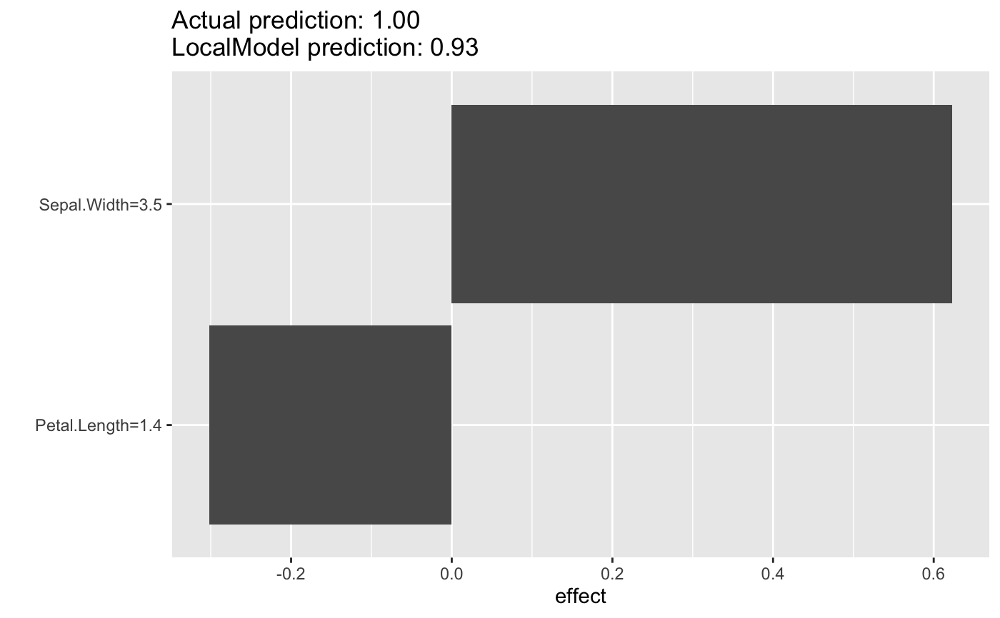

LocalModel fits locally weighted linear regression models (logistic
regression for classification) to explain single predictions of a prediction
model.
A weighted glm is fitted with the machine learning model prediction as target. Data points are weighted by their proximity to the instance to be explained, using the gower proximity measure. L1-regularization is used to make the results sparse.
The resulting model can be seen as a surrogate for the machine learning model, which is only valid for that one point. Categorical features are binarized, depending on the category of the instance to be explained: 1 if the category is the same, 0 otherwise.
To learn more about local models, read the Interpretable Machine Learning book: https://christophm.github.io/interpretable-ml-book/lime.html
The approach is similar to LIME, but has the following differences:
Distance measure: Uses as default the gower proximity (= 1 - gower
distance) instead of a kernel based on the Euclidean distance. Has the
advantage to have a meaningful neighborhood and no kernel width to tune.
When the distance is not "gower", then the stats::dist() function with the
chosen method will be used, and turned into a similarity measure:
\(sqrt(exp(-(distance^2) / (kernel.width^2)))\).
Sampling: Uses the original data instead of sampling from normal distributions. Has the advantage to follow the original data distribution.
Visualization: Plots effects instead of betas. Both are the same for binary features, but ared different for numerical features. For numerical features, plotting the betas makes no sense, because a negative beta might still increase the prediction when the feature value is also negative.
To learn more about local surrogate models, read the Interpretable Machine Learning book: https://christophm.github.io/interpretable-ml-book/lime.html
Ribeiro, M. T., Singh, S., & Guestrin, C. (2016). "Why Should I Trust You?": Explaining the Predictions of Any Classifier. Retrieved from http://arxiv.org/abs/1602.04938
Gower, J. C. (1971), "A general coefficient of similarity and some of its properties". Biometrics, 27, 623--637.
plot.LocalModel and predict.LocalModel
Shapley can also be used to explain single predictions
The package lime with the original implementation
iml::InterpretationMethod -> LocalModel
x.interestdata.frame
Single row with the instance to be explained.
knumeric(1)
The number of features as set by the user.
modelglmnet
The fitted local model.
best.fit.indexnumeric(1)
The index of the best glmnet fit.
Inherited methods
new()Create a Local Model object.
LocalModel$new( predictor, x.interest, dist.fun = "gower", kernel.width = NULL, k = 3 )
predictorPredictor
The object (created with Predictor$new()) holding the machine
learning model and the data.
x.interestdata.frame
Single row with the instance to be explained.
dist.funcharacter(1))
The name of the distance function for computing proximities (weights in
the linear model). Defaults to "gower". Otherwise will be forwarded
to stats::dist.
kernel.width(numeric(1))
The width of the kernel for the proximity computation.
Only used if dist.fun is not "gower".
knumeric(1)
The number of features.
data.frame
Results with the feature names (feature) and contributions to the
prediction.
predict()Method to predict new data with the local model See also predict.LocalModel.
LocalModel$predict(newdata = NULL, ...)
newdatadata.frame
Data to predict on.
...Not used
explain()Set a new data point to explain.
LocalModel$explain(x.interest)
x.interestdata.frame
Single row with the instance to be explained.
clone()The objects of this class are cloneable with this method.
LocalModel$clone(deep = FALSE)
deepWhether to make a deep clone.
library("randomForest") # First we fit a machine learning model on the Boston housing data data("Boston", package = "MASS") X <- Boston[-which(names(Boston) == "medv")] rf <- randomForest(medv ~ ., data = Boston, ntree = 50) mod <- Predictor$new(rf, data = X) # Explain the first instance of the dataset with the LocalModel method: x.interest <- X[1, ] lemon <- LocalModel$new(mod, x.interest = x.interest, k = 2)#>#>#>#>lemon#> Interpretation method: LocalModel #> #> #> Analysed predictor: #> Prediction task: unknown #> #> #> Analysed data: #> Sampling from data.frame with 506 rows and 13 columns. #> #> Head of results: #> beta x.recoded effect x.original feature feature.value #> rm 2.9180763 6.575 19.186352 6.575 rm rm=6.575 #> lstat -0.3078282 4.980 -1.532985 4.98 lstat lstat=4.98# Look at the results in a table lemon$results#> beta x.recoded effect x.original feature feature.value #> rm 2.9180763 6.575 19.186352 6.575 rm rm=6.575 #> lstat -0.3078282 4.980 -1.532985 4.98 lstat lstat=4.98# Reuse the object with a new instance to explain lemon$x.interest#> crim zn indus chas nox rm age dis rad tax ptratio black lstat #> 1 0.00632 18 2.31 0 0.538 6.575 65.2 4.09 1 296 15.3 396.9 4.98lemon$explain(X[2, ]) lemon$x.interest#> crim zn indus chas nox rm age dis rad tax ptratio black lstat #> 2 0.02731 0 7.07 0 0.469 6.421 78.9 4.9671 2 242 17.8 396.9 9.14plot(lemon)# LocalModel also works with multiclass classification rf <- randomForest(Species ~ ., data = iris, ntree = 50) X <- iris[-which(names(iris) == "Species")] mod <- Predictor$new(rf, data = X, type = "prob", class = "setosa") # Then we explain the first instance of the dataset with the LocalModel method: lemon <- LocalModel$new(mod, x.interest = X[1, ], k = 2) lemon$results#> beta x.recoded effect x.original feature #> Sepal.Width 0.1780728 3.5 0.6232546 3.5 Sepal.Width #> Petal.Length -0.2158144 1.4 -0.3021402 1.4 Petal.Length #> feature.value #> Sepal.Width Sepal.Width=3.5 #> Petal.Length Petal.Length=1.4plot(lemon)